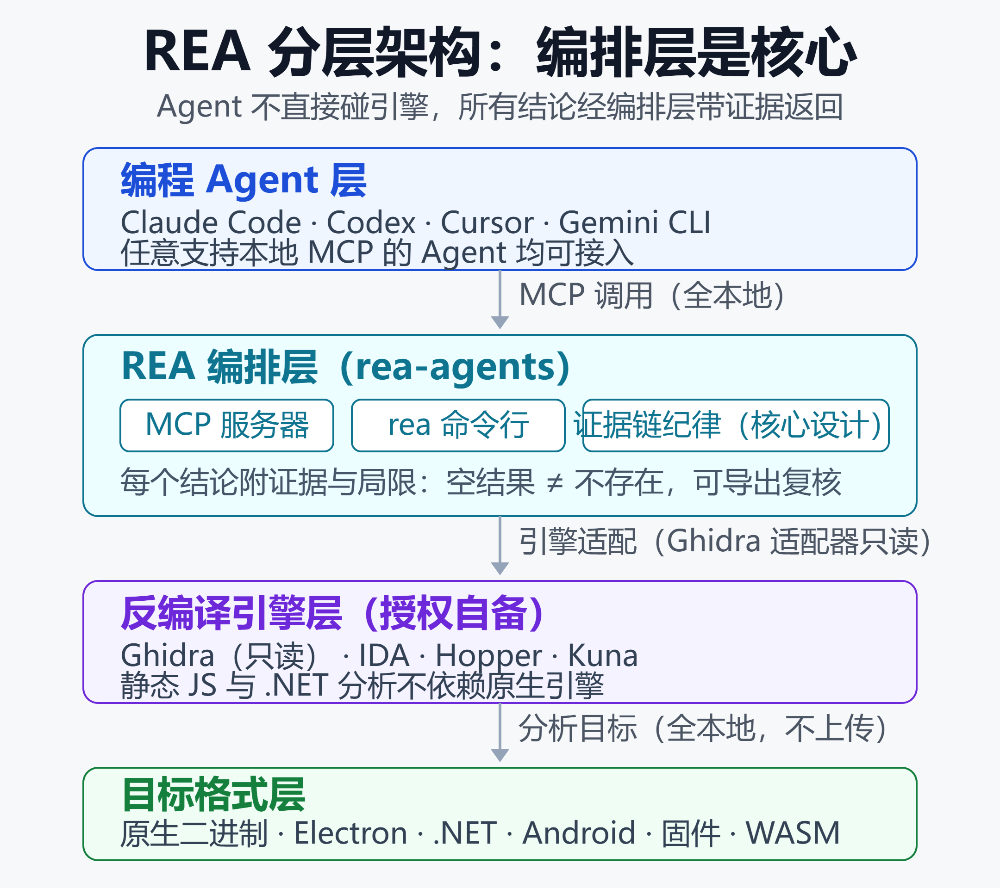
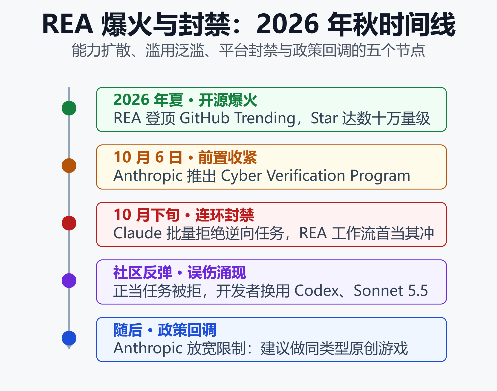

REA爆火：AI Agent逆向一切，从网页行为到原生二进制的证据链革命
引言：一颗 1996 年的打砖机，被 AI 拆到指令级
2026 年秋天，GitHub 上出现了一个现象级开源项目：REA，全称 Reverse Engineer Anything，口号是「用 Agent 逆向一切——从应用行为到原生二进制」。
它的标志性展示是：把 1996 年的打砖机游戏 DX-Ball 拆开，从 x86 指令层面重建出声音左右声道的 pan 计算函数，然后用 3,205 个测试用例逐一对比——重建结果与原版输出完全一致。
这个项目冲上过 GitHub Trending 第一，Star 数进入数十万量级（不同快照口径从十余万到近五十万不等，第三方评测称无法独立核实）。Discord 社区成员超过 5 万，README 被翻译成 20 多种语言。
但真正让它出圈的，是一个月后的另一件事：Anthropic 开始批量拒绝逆向工程任务，REA 工作流首当其冲。一边是「逆向一切」的能力狂飙，一边是 AI 公司的连环封禁——这场冲突比工具本身更值得拆解。
一、REA 是什么：把逆向工程变成 Agent 的一项本地能力
REA 的仓库在 GitHub —— morluto/rea，MIT 协议开源，TypeScript 实现，npm 包名 rea-agents，官网 rea.tools。
它的定位一句话可以说清：一个给 AI Agent 用的逆向工程 MCP 服务器，外加一套同能力的命令行工具。
「MCP（Model Context Protocol）」是 Anthropic 推出的工具接入协议，如今已是 AI Agent 连接外部工具的事实标准之一，背景可参考 MCP vs A2A：重塑 AI Agent 生态的两大协议深度解析 。REA 相当于在 MCP 这一层补上了「逆向工程」这块拼图。
装好之后，Claude Code、Codex、Cursor、Gemini CLI 任何支持本地 MCP 的 Agent 都能调用它。支持的分析目标覆盖面相当宽：
- 原生二进制文件（x86、16 位 DOS 等）
- JavaScript / Electron 应用（含 ASAR 包）
- .NET 程序集
- 网站与录制的网络活动
- Android 应用、固件、WebAssembly
分析全程在本地运行，不上传用户的应用。每个结论都附带证据与局限性说明，供人事后复核。
还有一个容易被忽略的附加能力：REA 可以把录制的 Web 会话或 Linux 桌面应用转成本地强化学习环境（Env-Lab），让 Agent 在真实软件上练习任务，而不是只在合成数据里打转。
二、工作原理：不造引擎，只做编排与证据链
REA 最清醒的设计决策是：自己不做反编译引擎。深度原生反编译交给成熟引擎——Ghidra、IDA、Hopper、Kuna，由用户自备授权；静态 JS 和 .NET 分析则不依赖任何原生引擎。
它做的是编排层：把不同引擎、不同目标格式包装成统一的 MCP 工具接口，再配上「调查方法论」性质的技能指令，教 Agent 怎么提问、怎么取证。

上图是 REA 的分层结构：上层是任意支持 MCP 的编程 Agent，中间是 REA 的编排层（MCP 服务器 + CLI + 证据链纪律），下层是各引擎适配器与目标格式。Ghidra 适配器是只读的，便于审计 Agent 到底做了什么。
与它相邻的生态是 Ghidra MCP 桥接家族（GhidraMCP、ghidra-mcp、pyghidra-mcp），定位差异可以这样概括：
| 工具 | 层级定位 | 适合场景 |
|---|---|---|
| GhidraMCP 等 | 单引擎桥接 | CTF、单个二进制 |
| REA | 多引擎编排 | 跨格式、要证据链 |
第三方对比评测（Aleksei Aleinikov —— Ghidra MCP vs REA）的结论是：两者更像相邻层级而非竞争者——单二进制深度分析用 Ghidra 桥接，跨格式调查、需要可复核结论时用 REA。
REA 的证据链纪律是它区别于「跑个脚本看输出」的关键：
- 每个结果必须附证据，空结果不等于「不存在」
- 结论必须说明局限性，防止 Agent 过度断言
- 证据可导出，供人工复核与留档
安装体验也体现了这种谨慎：npx rea-agents setup 会先展示完整计划、等待用户批准、备份配置后才写入，rea uninstall 可一键撤销。命令行用法示例：
npx rea-agents setup
npx -y rea-agents@latest \
analyze-javascript-application /path/to/app --json
需要留意平台支持：Linux 推荐 Ubuntu 24.04+；Windows 目前标注为实验性，且仅支持 Ghidra 引擎。
三、三个案例：打砖机、剪贴板与弹幕角
官方展示的三个案例，恰好覆盖三种典型逆向场景。
案例一：DX-Ball——从指令重建算法。1996 年的打砖机游戏，无源码。REA 从 x86 指令层面重建声音 pan 计算函数，3,205 个用例全部与原版输出一致。这验证的是「原生二进制到算法语义」的重建能力。
案例二：Notion——追踪 Electron 桥接。分析 Notion 桌面端的剪贴板行为，追踪 preload 脚本与主进程之间的 IPC 桥接链路。这验证的是「ASAR 包到运行时行为」的解释能力——Electron 应用的安全审计正是这类需求的主战场。
案例三：TH04——恢复 16 位弹幕算法。东方 Project 第四作（PC-98 平台，16 位 DOS），恢复弹幕环的角度计算。16 位实模式代码是传统逆向的高难度领地，这个案例展示的是 Agent 处理「古老且冷门架构」的能力。
三个案例的共同点是：结论不是「看起来像」，而是带回证据的可复核重建。GitHub 上还有一个 GitHub Topics —— reverse-engineering-anything 案例集合，收录了社区用 REA 完成的数十个真实项目。
四、爆火的另一面：Anthropic 的连环封禁
能力扩散的速度，超出了所有平台的预期，然后反噬来了。
时间线大致如下（据 Tom's Hardware —— Anthropic 模型开始拦截游戏复刻与克隆任务整理）：

上图按时间排列了五个关键节点。10 月上旬 Anthropic 推出 Cyber Verification Program 收紧前沿模型的网络安全能力；10 月下旬，Claude Code 与 Opus 5.5 开始批量拒绝游戏复刻与逆向任务；社区强烈反弹后，政策又有所回调。
被泄露的疑似规则文本写道：「可以做原创游戏……不要复刻特定的现有游戏，即使改名或声称是原创。」
误伤面相当大。Claude Code 的 issue 区出现了大量翻车案例：开发中途的标准游戏任务被拒、给自家游戏做反作弊被拒、分析 Windows 崩溃转储被拒、清理三星电视预装软件被拒。安全研究员 SojalSec 在 X 上直接断言：「Anthropic just quietly killed REA」。
封禁的背景是真实的滥用潮：Steam Next Fest 被 AI 克隆游戏淹没；有独立工作室遭到敲诈——对方威胁在其原作完成前，把 demo 克隆成完整游戏抢先发布；免费克隆 Adobe 套件、Office 365 的项目病毒式传播；主机游戏的 decomp/recomp 项目（如黄金眼 007 的重编译版）也在这波浪潮里。
Opus 5.5 系统卡给出的边界是：可以帮你分析拥有源码的程序的安全缺陷，不对第三方二进制做反编译。同期 OpenAI 也封过清理电视预装软件的用户账号。
社区的应对很实际：换模型。Codex、Sonnet 5.5 等在逆向任务上仍然配合，技术社区很快出现了 REA 配合替代模型的配置指南。Anthropic 随后把规则放宽为「建议做同类型的原创游戏」。
这场拉锯战暴露了一个结构性矛盾：模型厂商用「拒绝」来治理滥用，但拒绝的粒度太粗，正版用途和滥用用途在指令层面几乎无法区分。
五、泼冷水清单：单一维护者、星数与安全
热度之外，审慎的声音同样值得听。第三方评测给 REA 列过一份风险清单：
- 基本是单一维护者项目，bus factor（关键人风险）堪忧
- Star 数来源无法独立核实，宣传口径偏乐观
- 安装脚本无签名校验，且会修改 Agent 全局配置
- Windows 支持是实验性，仅 Ghidra 引擎可用
安全问题更实际。逆向分析的样本里可能藏有恶意构造的字符串，会对 Agent 形成提示注入；反编译出来的代码会发给云端模型厂商——分析机密二进制前要想清楚这一点。
还有仿冒风险：官方明确警告市面上存在山寨分发，只认 morluto/rea 仓库、rea.tools 官网和官方 npm 包 rea-agents 三个渠道。
六、法律边界：AI 不会把不合法的事洗白
逆向工程的法律地位从来不是非黑即白。美国《数字千年版权法》17 U.S.C. 1201 有互操作性例外，欧盟软件指令 69d、69e 条也有类似空间——但例外条件严格，且各法域差异大。
第三方评测里有一句话值得抄下来：AI does not launder it——AI 不会把原本不合法的事洗白。用 Agent 做和用人工做，法律评价没有区别。
落到操作层面，合法与否取决于四层检查：
- 授权：目标软件的许可协议是否禁止逆向
- 合同：是否存在 EULA、NDA 等合同约束
- 法定例外：是否落入互操作、安全研究等法定例外
- 工具政策：所用模型与工具自身的使用条款是否允许
给自家遗留系统做兼容性分析、对拥有版权的代码做安全审计、在许可允许范围内的模组开发、学习冷门架构——这些是争议较小的正向用途。克隆他人商业软件的核心功能再发布，无论用什么工具做，风险都摆在明面上。
七、给开发者的行动清单
如果打算把 REA 或同类工具纳入工作流，社区沉淀的最佳实践相当「无聊」，但每一条都有代价换来的教训：
- 一次性虚拟机：分析未知样本必须放在无凭据、可丢弃的 VM 里
- 只读优先：优先用只读适配器，避免 Agent 的错误重命名污染分析记录
- 固定版本：锁定工具与引擎版本，保证结论可复现
- 保存证据链：导出 REA 的证据文件，结论要能事后复核
- 先问权限：动手前明确回答「是否有权对这个目标做逆向」
- 选对模型：Claude 系对逆向任务有较严拦截，Codex、Sonnet 5.5 等目前更配合
对独立开发者，2026 年下半年的现实是双面的：逆向工具前所未有地强，但「用 AI 快速复刻别人的应用」这条路，正在被平台政策、法律风险和社区声誉三面挤压。相关风险可延伸阅读 Vibe Coding的隐藏代价：2000个裸奔应用、630万丢失订单、和322%的权限漏洞 。
小结
REA 的价值不在「破解了什么」，而在它把逆向工程从专家手艺变成了 Agent 的一项标准能力，并且用证据链纪律守住了结论的可复核性。
Anthropic 的封禁则演示了另一件事：当一项能力开始扩散，模型厂商会先用最粗的工具——拒绝——来响应，然后再在误伤声中回调。能力、滥用与治理的三角博弈，才刚刚开始。
对普通开发者，合理的姿势不是恐慌也不是狂欢：把「是否有权」放在第一位，把证据链留在本地，把样本关进虚拟机。工具会越来越强，这两条不会变。
免责声明
本文信息采集于 2026 年 11 月 23 日，主要来源包括 GitHub 官方仓库、Tom's Hardware 与 PCMag 报道、Hacker News 与 Reddit 社区讨论、第三方技术评测及中文科技媒体报道。Star 数、封禁规则细节等数据以各来源发布时点为准。本文仅为技术资讯分享，不构成任何法律建议。逆向工程在不同法域的合法性差异很大，实际操作前请咨询专业法律意见。文中提及的第三方商标与产品权利归属其各自所有者。
参考来源
- GitHub —— morluto/rea 官方仓库
- REA 官网 rea.tools
- GitHub Topics —— reverse-engineering-anything 案例集合
- Tom's Hardware —— Anthropic 模型开始拦截游戏复刻与克隆任务
- PCMag —— Claude, Stop Using Me to Recreate Games
- Hacker News —— REA: Reverse Engineer Anything 讨论串
- Reddit r/gamedev —— Should we be worried about AI reverse engineering for games?
- Reddit r/OpenAI —— Reverse Engineer Anything: AI Companies Crack Down
- Aleksei Aleinikov —— Ghidra MCP vs REA: AI Reverse Engineering
- hoangyell.com —— REA explained 架构解析
- 开源中国 —— 把逆向工程变成 agent 的一项本地能力
- 知乎 —— REA + x64dbg-MCP：当 AI Agent 开始操作反编译器和调试器
相关阅读
- MCP vs A2A：重塑 AI Agent 生态的两大协议深度解析
- Vibe Coding的隐藏代价：2000个裸奔应用、630万丢失订单、和322%的权限漏洞
- OpenCode实战指南：免费AI编程Agent + 免费大模型，零成本搞定代码开发
推荐搭配装备
善其事，利其器。以下硬件能最大化你的AI体验👇
🔗 通过以上链接购买可支持本站持续运营 🙏